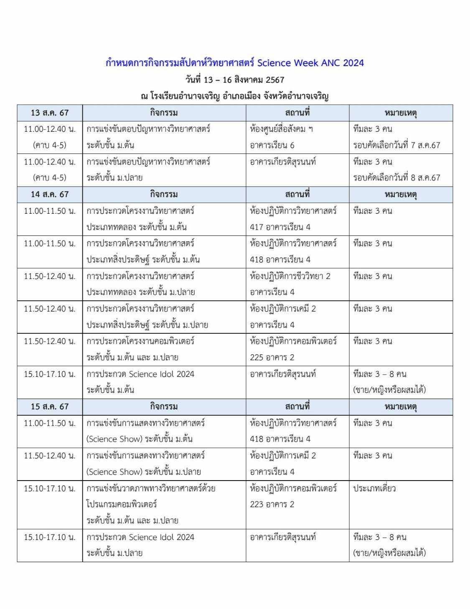
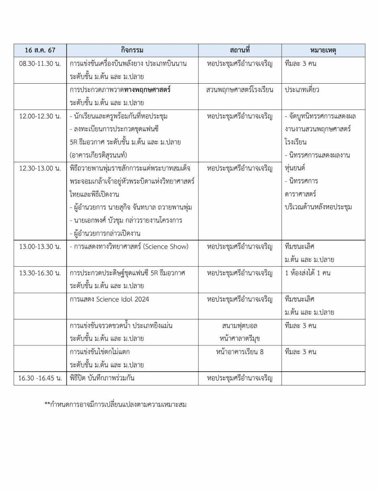

โรงเรียนอำนาจเจริญ
|
หน้าหลัก
|
ประวัติโรงเรียนอำนาจเจริญ
|
ข้อมูลบุคลากร
|
โรงเรียนอำนาจเจริญได้จัดการแข่งขันวันวิทยาศาสตร์ ระหว่างวันที่ 12-16 สิงหาคม ปีการศึกษา 2565 มีรายการให้เลือกแข่งขันมากถึง 10 รายการ
20 กรกฎาคม 2567 เวลา 20:22 น.
เนื่องในวันวัทยาศาสตร์วันที่ 18 สิงหาคม ของทุกปี เป็นอีกวันที่มีความสำคัญในวงการวิทยาศาสตร์ วงการดาราศาสตร์ และวงการศึกษาของไทย เพราะตรงกับวันที่พระบาทสมเด็จพระจอมเกล้าเจ้าอยู่หัวรัชกาลที่ 4 "พระบิดาแห่งวิทยาศาสตร์ไทย" ได้ทอดพระเนตรสุริยุปราคาเต็มดวง โรงเรียนอำนาจเจริญได้จัดกิจกรรมการแข่งขันดังนี้  
ลิขสิทธิ์ © 2567 โรงเรียนอำนาจเจริญ. สงวนลิขสิทธิ์.